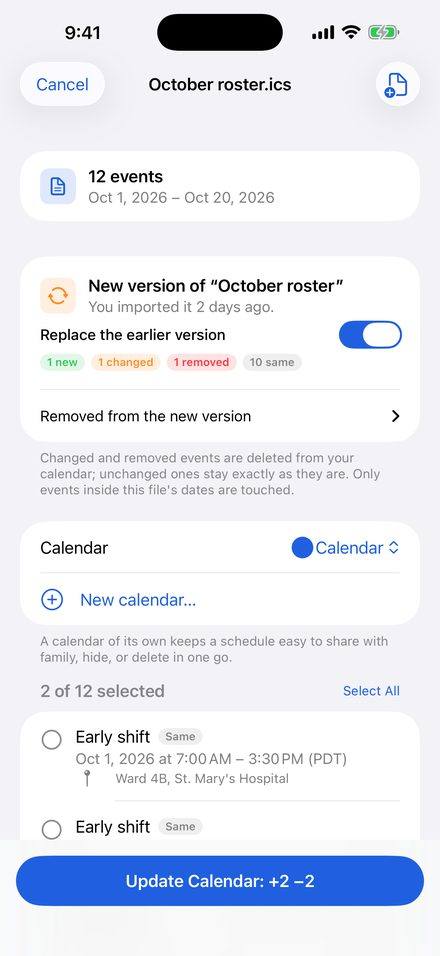
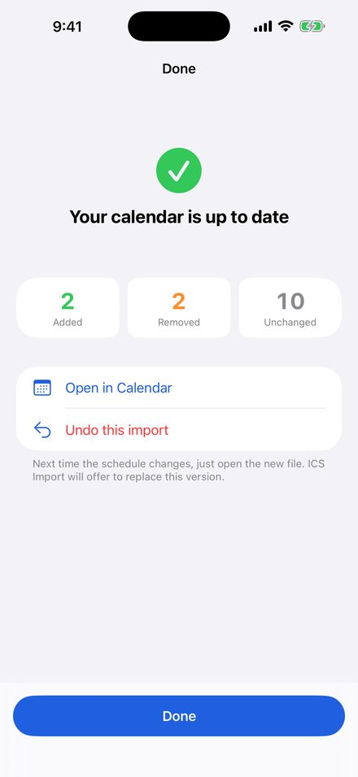

Replace, don't duplicate
- Open the new version of a roster or timetable and ICS Import finds the one you imported before
- See what's new, changed and removed before anything happens
- Only changed and removed events are touched. Unchanged ones keep your edits and reminders
- Only the new file's dates are affected, so next month's roster never deletes this month's
Undo any import
- Every import is listed in the app. One tap removes everything a file added
- Put a schedule in a calendar of its own to share it with family or hide it in one go
Works with the file you already have
- No airline, hospital or school password. No account, no ads
- Rosters exported from crew and shift apps, university timetables, season fixtures, conference agendas, invites
- Opens files from Mail, Gmail, Outlook, WhatsApp, Telegram, Files and Safari, including the ones iPhone shows but won't add
- Night shifts across midnight, all-day events, repeat rules, skipped dates and reminders come through right
- Fixes Outlook and Exchange time zones like "Pacific Standard Time" that make times come out hours off
How to use it
- Tap the .ics file in any app, tap Share, then ICS Import
- Pick the calendar and tap Add
- Next time the schedule changes, open the new file and tap Update
Guides
- iPhone won't add an .ics file to Calendar: every fix
- Outlook .ics events show the wrong time on iPhone
Privacy policy
Last updated: 2026-09-25
ICS Import is an iPhone and iPad app that adds the events from .ics (iCalendar) files to your Apple Calendar and keeps them up to date when a new version of the file arrives. It is free to use for up to three events per import; a single one-time purchase removes that limit and enables Replace.
What the app does with your data
Everything happens on your device. The app reads the .ics file you open, shows you the events in it, and adds the ones you pick to the calendar you choose. The file is not uploaded anywhere. The app has no servers, no accounts, no analytics and no advertising.
Calendar access
Adding events needs only write-only calendar access. That lets the app add events and see the names of your calendars; it cannot read the events already in your calendar.
Some features ask for full calendar access, and only when you use them: replacing an earlier import with a new version, undoing an import, creating a new calendar, and removing single dates the file skips from a repeating event. Full access is used only to find and delete events that ICS Import itself added, and nothing read from your calendar leaves your device. You can decline; adding events keeps working. You can change either permission at any time in Settings > Privacy & Security > Calendars.
Data stored on your device
The app keeps a local history of each import: the file name, the calendar, and the title, time and calendar identifier of each event it added. It uses this to avoid duplicates and to know what to replace or undo. You can erase the history in the app's Settings screen. It is deleted when you uninstall the app.
Purchases
The one-time purchase is processed by Apple through the App Store. We never see your payment details. Use "Restore Purchase" in Settings to bring the purchase to a new phone signed in with the same Apple ID.
What we do not do
We do not collect, store, sell or share any personal data. There is no tracking of any kind.
Support
Something in a file did not import the way you expected? Email mybosseatpoop@gmail.com and attach the .ics file if you can; most problems are fixed within a few days.
Common questions:
- The app is not in the share sheet. Tap the file first so iOS shows its preview, then use the Share button and pick ICS Import. If it is still missing, scroll the app row to the end and tap "More".
- Times are off by a few hours. The file probably used a time zone name iOS does not know. The app shows a note above the event list when that happens; email us the file and we will add the zone.
- Some dates of a repeating event should have been skipped. Allow full calendar access when asked, or remove those dates in Calendar by hand.